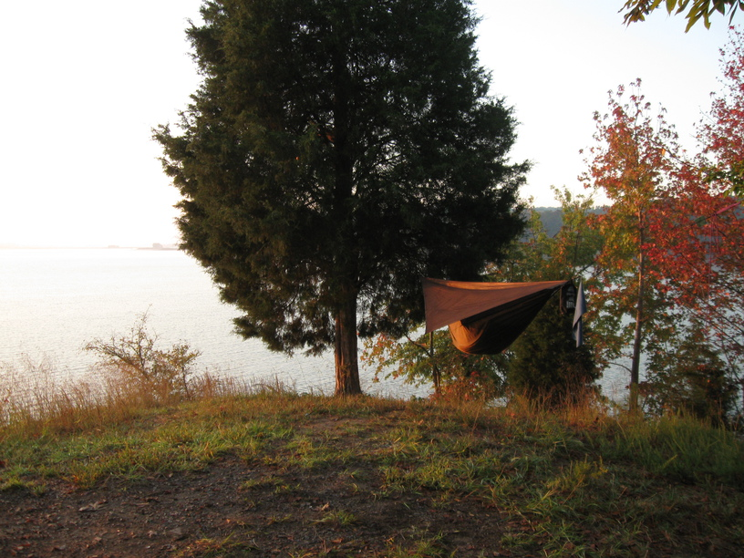
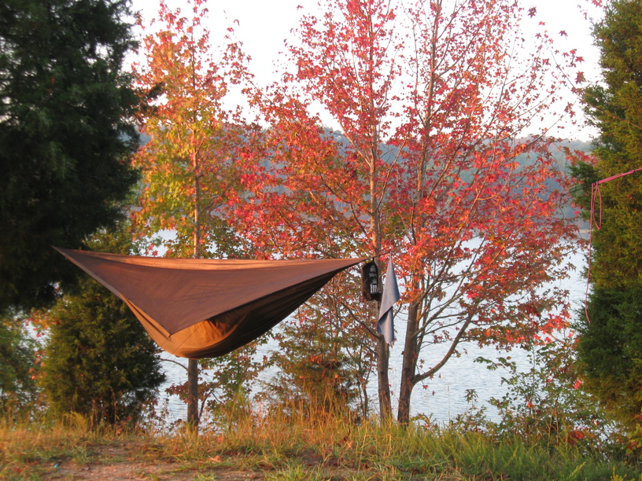
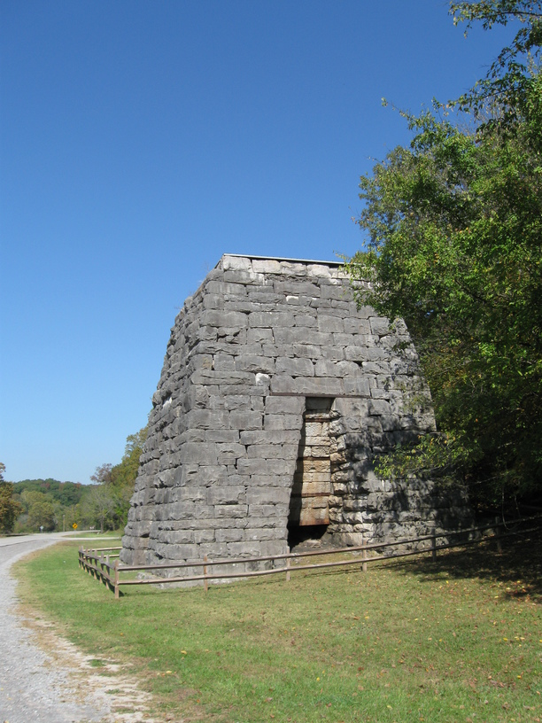
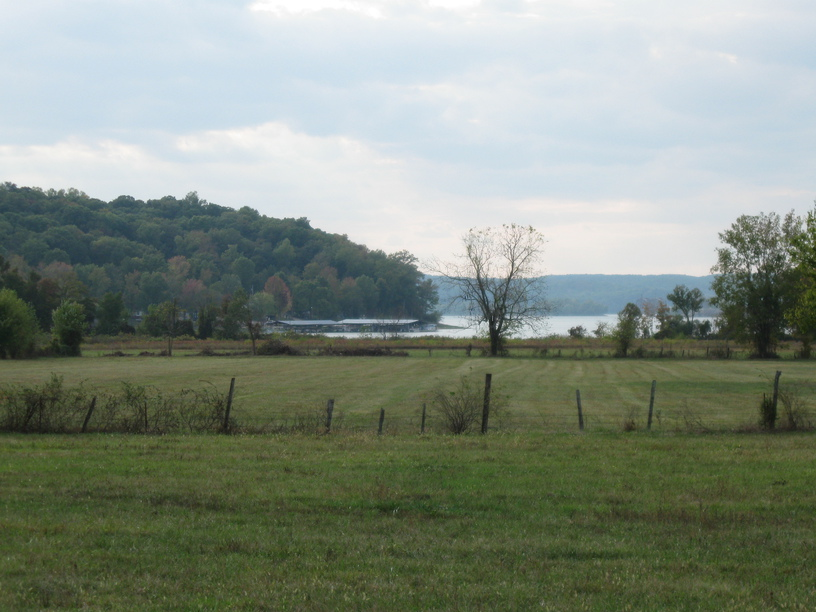
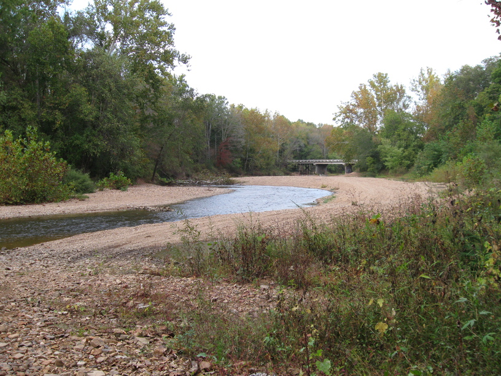
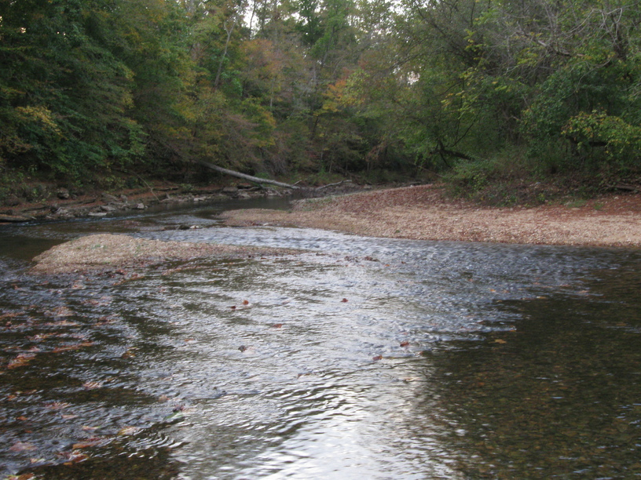
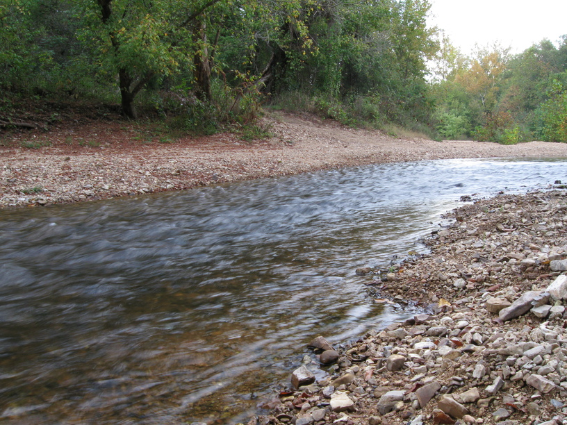
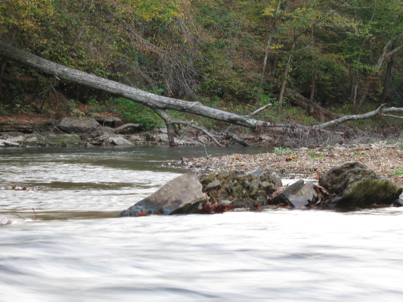

15 Oct 2008, Stewart, TN
I had some adventure today. The road I had planned to ride out of my campsite was washed out & under construction. There wasn't an obvious detour, so I invented one. (Well, some of it looked like it had been traveled previously, but only by foot, I'm sure.) I rode along the side of (and through) a soybean field, followed a power line cut to another field, and finally pushed my bike through the woods & up a hill to return to the road. It was tough, and my legs got really scraped up, but I think it was worth it, compared to backtracking.
Tonight I'm camping near a beautiful creek—I can hear it from my tent. I was passed by some kids on ATVs and then saw them down by the creek when I crossed the bridge. I decided to turn back and ask them about a campsite, and they recommended I just go a little ways down the creek, which is what I did. They were friendly & curious about my trip, so we chatted a bit before they rode off & I made camp.







